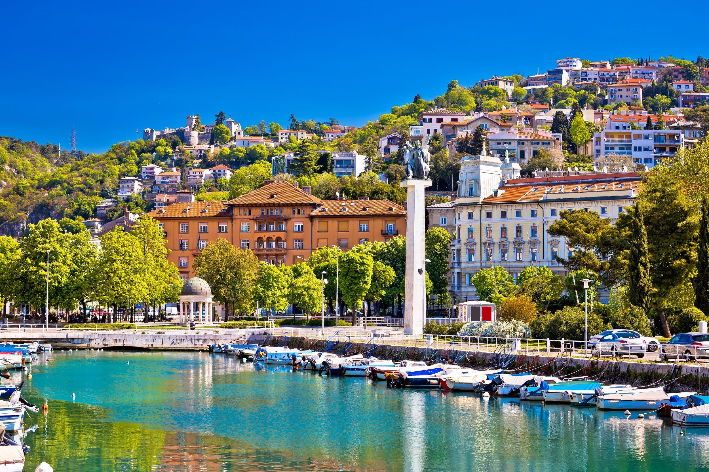

Where can you find us?
ZAGREB

RIJEKA

Nestled in a quaint corner of town, the Ice Cream Dreamery stands as a testament to the artistry and science of frozen delights. As you step through the factory doors, you are immediately greeted by the intoxicating aroma of vanilla, chocolate, and a medley of exotic flavors that dance in the air.
More about UsThe Ice Cream Factory offers a variaty of flavors...choose yours
Sorbet is a delightful frozen dessert that stands out for its refreshing and fruit-forward profile.
Gelato is made with milk, sugar, and flavorings, just like ice cream, but it typically contains a higher proportion of milk to cream.
Frozen yogurt, often abbreviated as "froyo," is a frozen dessert that is similar to ice cream but is made with yogurt instead of cream.